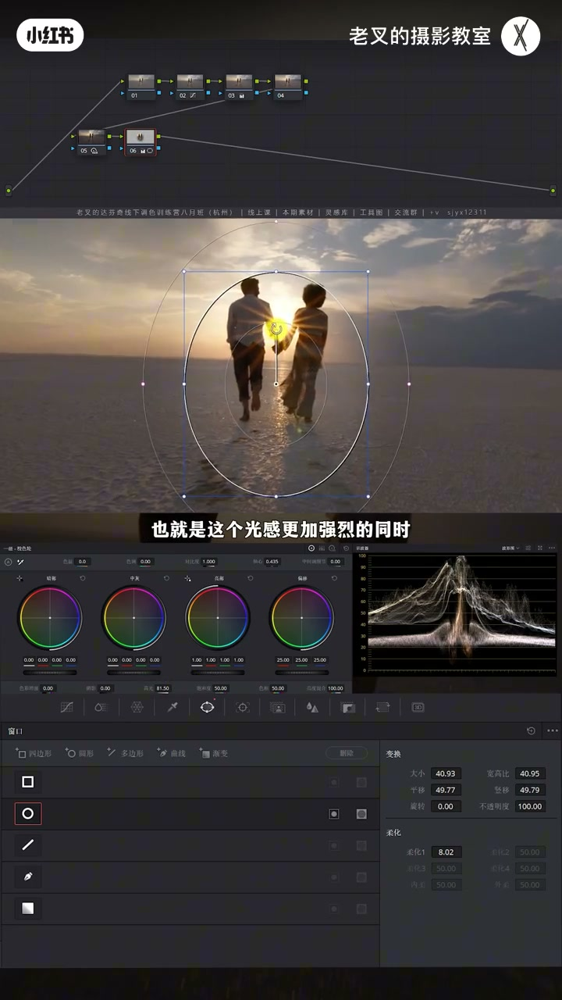
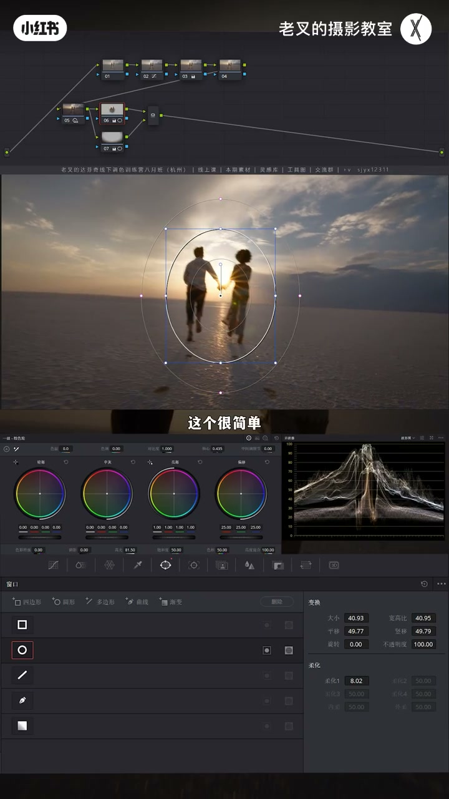
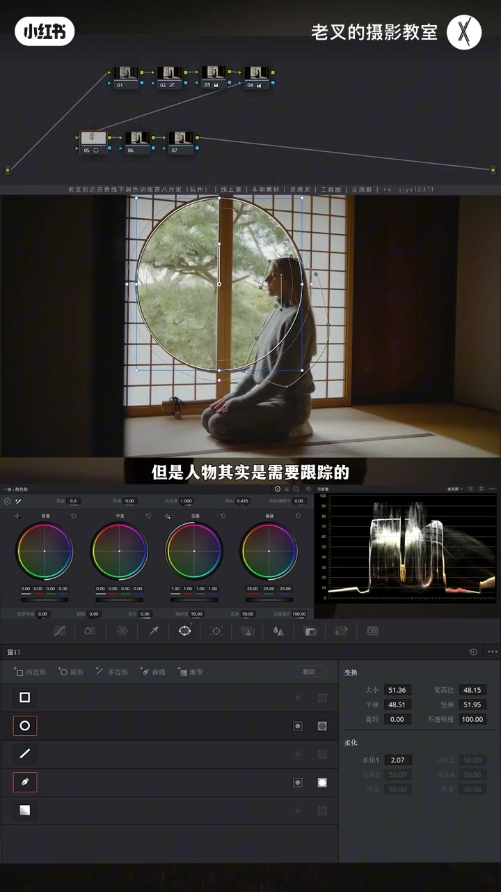
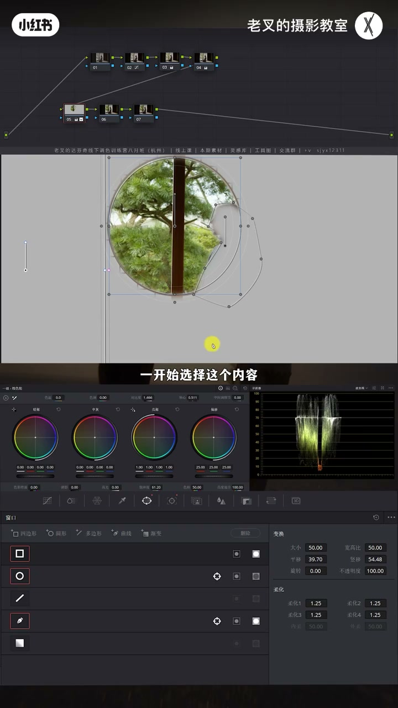
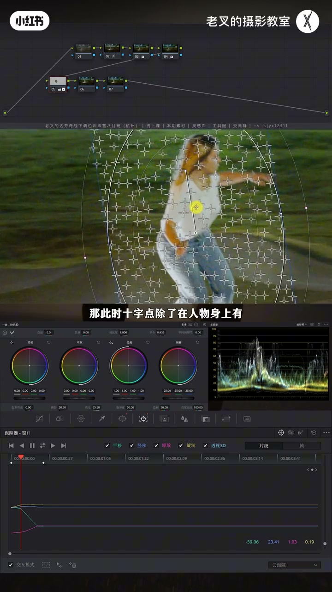
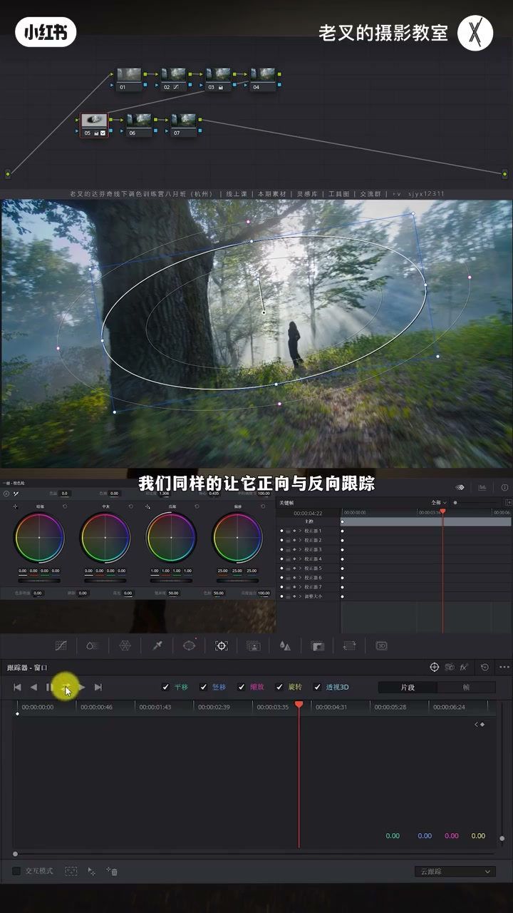
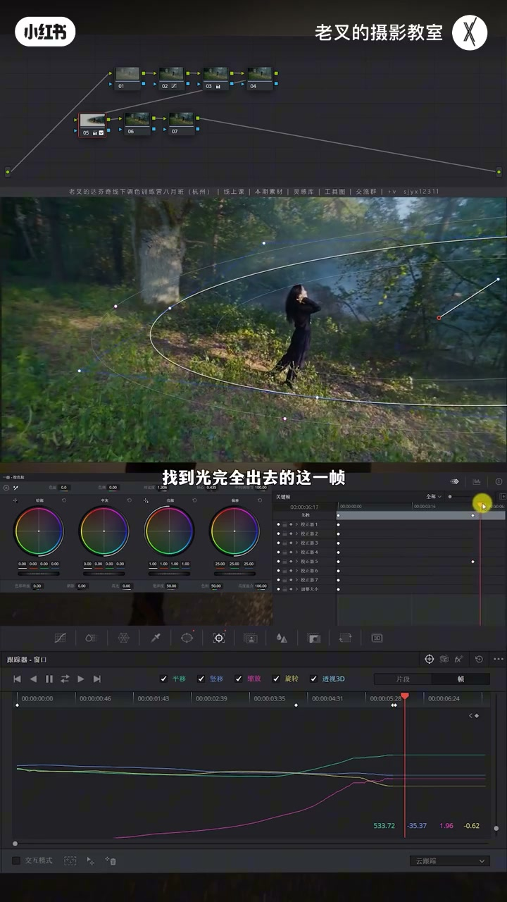

内容要点
承接上期四种建遮罩方法，老叉专讲跟踪：相对位置几乎不变可不跟踪；有遮挡的平移用圆形减人物再必要时加方形减墙并帧跟踪；主体大幅移动靠交互模式删背景十字点再续跟；出画物体可用帧模式移出或动态关键帧淡出效果。四种办法覆盖八成以上场景，疑难再上神奇遮罩。
知识结构
人物相对位置几乎不变：光源遮罩+地面大圆压暗后，运动镜头也不必跟踪。
窗外圆遮罩减人物钢笔；墙侵入时加方遮罩差集+帧模式打关键帧随墙移动。
自动跟丢因背景十字点：交互模式框删背景点，只留人物点再续跟。
丁达尔光出画：帧模式移遮罩出画，或两头动态关键帧重置对比度线性淡出。
四法≈80%；剩 20% 且机器够再用神奇遮罩；限定器与遮罩绑定。
跟踪也要偷懒：相对不动就不跟；跟丢先清背景跟踪点；规则遮挡用差集+帧关键帧；出画用移出或动态关键帧淡出。差集口令：谁被减去就点谁的差集按钮。
00:00-01:35情况一：相对位置不变——可不跟踪
上期四种建遮罩后，很多人卡在跟踪麻烦。遮罩跟踪在视频调色里几乎绕不开，但思路清了就不算难。第一种：相对位置不变的运动镜头——人物与镜头都晃，但人物在画面中位置几乎不变。
强化可从光源画遮罩略提高光，顺带提亮人物；再超大柔化圆形遮罩反转主要压地面重复内容，压阴影同时略提高光，重置视线中心。拖时间轴可见相对位置变化不大——结论：不跟踪。不是所有运动镜头都必须跟。

01:35-05:30情况二：有遮挡的线性位移——差集 + 帧跟踪
室内已调完但窗外树太灰：圆形遮罩强化窗外，Shift+H 高亮发现与人物重叠，钢笔大致抠人物后点差集减掉，柔化略开大。窗外遮罩通常少跟（运镜会把主体稳住），人物要跟：选中遮罩打开跟踪器，正向+反向跟踪。窗外加对比、轴心略压、略加饱和即可。
往前拖会发现前景墙侵入圆形范围，关遮罩能见痕迹。硬缩圆遮罩即使用帧模式打关键帧，直墙侵入仍难匹配、边缘易露馅。改法：给墙再画方形遮罩，高亮确认当前是「圆−人物+方」，再对方也点差集；对方开帧跟踪，移动/变形自动打关键帧，让方遮罩随墙侵入一起挡圆。
差集怎么记：每个遮罩右侧左钮反转、右钮差集——谁被减掉就勾谁的差集。本例减人物与左侧墙。


05:30-07:50情况三：主体大幅移动——删背景十字点再续跟
主体在画面中位置不固定、移动幅度大：人物大致遮罩（可夸张提高光便于看跟踪）。自动正向反向跟到某帧会跟丢。打开跟踪面板交互模式：遮罩内十字点决定跟踪；跟丢帧可见大量点落在背景被背景带走。
解法：回到跟丢前一帧，交互模式下框选背景十字点，用交互模式右侧删点按钮清掉——宁可多删、别留背景点，人物点被误删也没关系。清干净后点正向跟踪续跟；若再被背景抢走，同样在跟丢前一帧再删点续跟。


07:50-09:40情况四：物体出画——移出或动态关键帧淡出
要强化的物体并非全程在画内，如丁达尔光：画遮罩加对比与中间调细节后正向反向跟，向前往往还行，穿越机转弯光出画后跟踪信息丢、遮罩停原地。
法一：切帧模式，光出画时手动把遮罩移出画，快且有效。法二：在光将出与完全出两帧，于关键帧窗对应校正器栏添加动态关键帧，在后一关键帧用大括号定位并重置对比度与中间调细节，让强化线性淡出。

09:40-10:02边界：四法约八成，疑难再用神奇遮罩
四种方法应付超过约 80% 情况。为何不用神奇遮罩：机器够力且碰上剩下 20% 疑难再用。限定器本就和遮罩高度绑定。有帮助就三连；本期完。

完整转录（416段）
以下文本由 Whisper medium 模型自动转录，可能存在少量识别误差，已尽可能修正。
上一期讲过四种遮罩的建立方法
非常多的朋友都在问跟踪这个问题
大体上说的还是跟踪的麻烦
那说在最前面视频调色
遮罩的跟踪必不可少
但是如果你把思路理清的话
操作起来其实也不算非常麻烦
今天带来四种不同的遮罩跟踪方式
第一种情况
相对位置不变的运动镜头
我们看到这个画面
在画面中我们能够发现
摄影师拍摄运动场景
镜头也是有一定的晃动的
同时人物也并非固定
对吧
我们如果要强化这个画面
大概率会画一个遮罩
从光源的位置出发
然后把底下这里的影子也要带到
画好遮罩之后
我们可以给它稍微增加一点点高光滑块
这样能够让这个光源
也就是这个光感更加强烈的同时
顺带的提亮一点人物
我们还会再建立一个
超大柔化
超大范围的一个圆形遮罩
主要影响的范围是在地面
我们希望能够让地面这些重复的内容
有更多的层次
我们把它反转了
让它引起到地面 对吧
然后再降低一点点阴影滑块
还是那句话
要压按就不能只压按
还得提亮
所以我们再稍微提高一点高光滑块
以这样的形式
能够重置一下画面中的视线中心
那我这里就简单一做
遮罩在目前这个画面下建好了
该如何进行跟踪呢
拖动时间轴
我们发现一种情况
虽然人物和镜头都在晃动
但是人物的相对位置
在画面中几乎没有变化
因此对于这样的一个镜头
我们遮罩跟踪的方式就是
不跟踪
这个很简单
上一期我们讲过
画遮罩我们要想办法偷懒
跟踪同样如此
不是所有的运动镜头的遮罩
都必须要跟踪的
如果遮罩内的物体
相对位置变化不大
那就没有特别大的必要去跟踪
然后来到第二种情况
有遮挡的线性位移
在这个画面中
我们假设
室内场景已经调色完成了
但是我们能够看到
窗外这个树它太灰了
我们可能要建立遮罩
来给它单独强化对吧
我们可以建立一个圆形遮罩
建立完了之后
我们按住Shift加H
打开突出显示
能够看到右侧这个人物
其实是有一部分重叠的
所以我们可以再建立一个
人物身上的遮罩
我们用钢笔大致抠出来
不用抠特别细
问题不大
抠出来了之后
我们需要采取两个遮罩的差距
所以我们可以点击
钢笔右侧第二个按钮
把它删去
把揉化开得稍微大一点点
这时候我们拖动时间轴
能够看到
它其实跟第一种情况差不多
我们这个窗户上的遮罩
不需要太多的跟踪
一般来讲
运镜本的摄影师
一般能够将主体控制
在画面中的固定位置
但是人物其实是需要跟踪的
我们看到人物这个位置
变化的还是比较大的
所以我们可以
选择要跟踪的这个遮罩
选中它
然后在遮罩右侧这个按钮中
打开跟踪器窗口这个键面
然后点击左上角第四个按钮
正向跟踪与反向跟踪
那此时它就会自动去跟踪了
好 我们此时大致的跟踪完了
那这个时候
我们对窗外的内容
只需要稍微给它强化一下反差就行
我们增加一点对比度
因为窗外的这个树太灰了嘛
对吧
然后配合轴心
可以让它稍微按一点点
再增加一点点它的饱和度
我觉得到这个程度就差不多
那这个画面
这样的操作就可以了吗
并不是啊
我们往前拉时间轴
你会发现这个画面运镜方式是
前景遮挡的平移
那左侧的墙壁
必然会侵入到我们遮罩的范围
如果我们把遮罩全部关闭
你会发现在这一块
有一个遮罩的痕迹
那这个时候我们该怎么办
是利用真跟踪的方式
去逐渐缩小原型遮罩吗
我们可以看一下
在我们跟踪器窗口的右上角
这里有一个真选项
打开真选项之后
我们可以自动去打关键针
那比如说
我们想要让这个遮罩
随着这个左边墙壁的侵入
让它逐渐的缩小
我们大致一做啊
一直到最后
就算我们做得非常精细
你依旧能够在这个位置看到破绽
比如说在这一块
对吧
它有非常明显的一个遮罩边缘
那这个时候呢
我们就要去转换思路
原型遮罩不好控
是因为墙壁是直的
所以它侵入的时候
我们原型遮罩
无法去完美的匹配到
这个侵入的墙
那既然如此
我们完全可以给墙壁
再画一个方形遮罩
画好了遮罩之后
我们同样的打开
Shift加H突出显示
能够看到此时
画面中遮罩的选择范围是
原型遮罩中
减去了右边人物的遮罩
同时再加上左边
方形遮罩的内容
对吧
所以我们同样要减去
左侧这个方形的遮罩
我们可以点击
方形遮罩右侧的第二个按钮
那这样画面中
遮罩范围就只剩下了
一开始选择这个内容
然后选择方形遮罩
同样的呼出
跟踪器窗口这个界面
然后我们再打开
右上角的针按钮
切换成真跟踪的模式
在这个界面激活的状态下
我们对遮罩做的每个行为
都会自动打上关键针
我们在这一针中
我们可以点击右上角
这里有个小按钮
我们点击它之后
它就会对目前这一针的
遮罩位置去打上一个针
然后我们将时间轴往前移
我们能够看到
墙壁逐渐侵入了
我们这个原型遮罩的范围
那么我们也同样的
把这个方形遮罩
给它往外移
在帧模式下
你只要改变
遮罩的形状和位置
它就会自动打上一个针
我们看到这里打上了一个针
对吧
同样我们再往前移
能够让我们这个遮罩
跟随着我们这个
墙壁的移动而移动
那这样就能够让我们
这个方形遮罩
随着运镜的方式的改变
而去改变
这个时候我们再打开
突出显示
能够看到左边
侵入的这个墙壁
同样的也以一个规则图形
去侵入了我们的圆形遮罩
那这个差距
到底该怎么理解
我们该什么时候
选择哪个遮罩的差距呢
非常简单
因为我们看到
每个遮罩右侧
都有两个按钮
左边这个按钮是反转
右边这个按钮是差距
谁被拣去
就选择谁的差距
我们这个画面中
是要拣去右侧这个人物
以及左侧这个墙
对不对
那就勾选
人物的这个遮罩右侧
第二个按钮的差距
以及墙壁的差距按钮
大家如果没有合适的素材
可以看视频中的小字
来免费领取素材操作一下
接下来我们来到第三种情况
大范围主体移动的情况
就像这个画面
我们能够看到
主体移动的幅度非常非常大
而且它在画面中的位置
不是相对固定的
那假设说
我们要给人物
稍微给它提亮一点点
我们给人物大概画一个遮罩
我们简单一画
重点不在调色
重点是在这个跟踪
画完了之后呢
我可以给它稍微提高点高光
我做的夸张一点
让我们这个遮罩变化
更加明显
做完了之后呢
我们可以打开跟踪器窗口界面
选择正向跟踪与反向跟踪
它就会自动跟
哎
出现问题了
到这一帧
它跟丢了
对不对
为什么呢
我们可以打开跟踪面板
左下角这里有个交互模式的按钮
打开之后我们能够看到
遮罩范围内打上了非常多的十字点
而遮罩就是依靠这些
十字定位点的位置信息的变化
而变化的
那此时十字点
除了在人物身上有
在背景中也有大量的十字点
我们来到跟丢的这一帧啊
应该是在这一帧
对吧
从这一帧开始
遮罩就无法跟上人了
能够看到遮罩跟丢的原因是因为
这些十字点被背景带走了
对不对
所以这个问题要怎么解决呢
最直接的方式就让这些十字点
不要固定在背景中
只固定在人物身上
怎么操作
我们来到跟丢的前一帧
在前一帧中
在交互模式勾选的前提下
我们可以鼠标去划出这些框
我们框选中这些背景中的十字点
然后点击交互模式
右侧第三个按钮
它会把这些十字点给它删了
背景中这些点全都给它删了
要注意的是
一定要拨删一点
哪怕我们会删到人物身上
已有的一些十字点也没关系
我们重点是要保证
背景中不留一点点十字点
好 我们此时检查一下
这些点基本上都在人物身上了
对吧
背景中应该是没有点了
在删好点了之后
我们点击跟踪器窗口左上角
右属第二个按钮
也就是正向跟踪这个按钮
我们给它再次继续跟
你会发现它就跟上了
但是跟到了这个位置
你会发现它又跟不上了
对不对
它又被背景带着走了
那为什么
也是一样的原因
因为它的十字点又被背景抢走了
我们同样来到跟丢的前一阵
应该是在这一阵
也把它的这些十字点给删了
然后再重新跟就行了
那为了节省时间
我就不演示了
操作其实一模一样的
接下来我们来到第四种情况
当我们需要跟踪的物体
它并非持续在画面中的时候
该怎么去处理呢
比如说这个画面
我们想要给这个丁达尔光
让它稍微强化一点
我们可以给它简单的画一个遮罩
然后增加一点对比度
再给它增加一点中间调细节
大概一做
做完了之后
我们同样的让它正向与反向跟踪
你会发现向前跟还是挺好的
它基本上能跟得上
但是跟到后面
你就发现出现了问题
因为穿越机它转了方向
这个光出画了
从而让跟踪信息丢失
导致遮罩停在了原地
那对于这种情况
我们有两种方法
第一种方法就是
我们可以切换为帧模式
手动的去给它赋予
让它在光出画的同时
我们也把这个遮罩移出画
这样的方法能够比较有效
而且快速的去解决这个问题
是第一种
第二种方法就是
利用动态关键帧的方法
我们可以找到光出画的这一帧
差不多是在这个位置
然后我们点击
达芬奇右下角视播器左边这个按钮
呼出关键帧的窗口
找到我们要调整的节点
它是5号节点对不对
那么关键帧窗口就是
我们在起始的这个位置
在矫正气5的这一栏中右键
选择添加动态关键帧
然后拖动时间轴
找到光完全出去的这一帧
差不多在这个位置
同样的也是右键
选择添加动态关键帧
那此时我们看到
两个关键帧的中间
会有两个倒三角的链接
我把这个关键帧拉长一点
让大家看得更明显
我们要实现的效果是
对光强化的这个效果
它是逐渐降低的 对吧
那么我们就可以定位
在右边这个关键帧中
按住键盘的大括号
可以左右定位关键帧
然后在右边这个关键帧中
将我们刚刚调整回调
也就是重置
对比度和中间调细节的数值
这样就能够让我们的调整
线性变化
你看到它是逐渐的变淡的
对吧 非常非常明显
那这四种方法
基本上能够应付得了
我们超过80%的情况了
肯定会有朋友会问
为啥不用更好用的神奇遮罩呢
如果你的电脑性能够
同时你还遇到了
剩下20%的情况
那么这种疑难杂症
就可以用神奇遮罩
至于线电器
线电器本就是和遮罩高度绑定的
如果本期内容对你有帮助的话
还希望多多三连
好了 这期就到这里
886